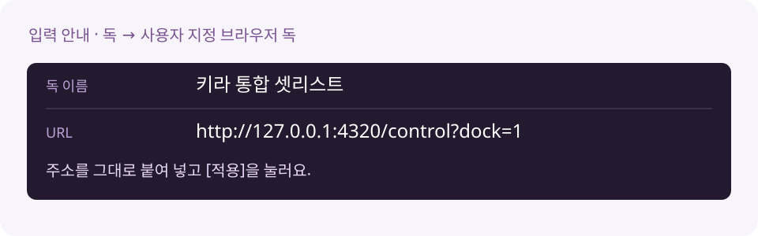
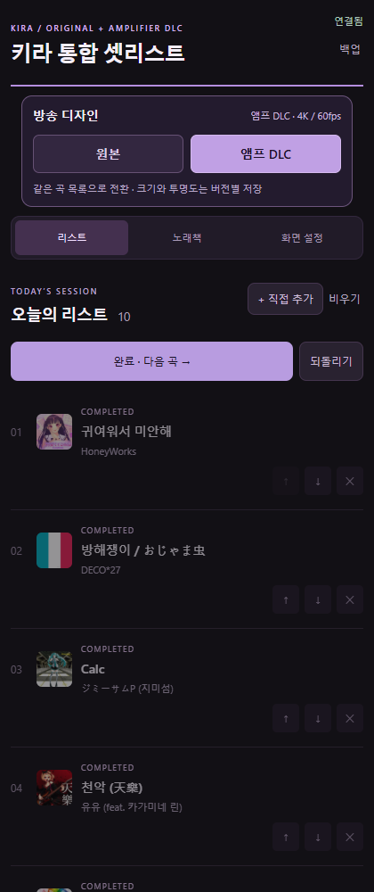

KIRA · ORIGINAL + AMPLIFIER DLC
남궁우와 같이, OBS에 직접 붙여요
원본과 앰프 DLC 기능은 같아요. 이 ZIP에는 설치 프로그램이 없어요. 내가 사용하는 장면에 스크립트·독·방송 소스를 하나씩 등록하는 방식이에요. OBS는 컴퓨터에 설치되어 있어야 해요.
1. 폴더를 자리 잡게 해요
ZIP을 받고 모두 압축 풀기를 눌러요. 예를 들어 문서 안의 KiraSetlistManual 폴더에 두면 돼요. 폴더 안에 kira-unified.lua, runtime, public, data가 함께 있는지 확인해요. 등록한 뒤에는 이 폴더를 이동하거나 삭제하지 않아요.
Node 실행 파일도 ZIP에 들어 있어요. 따로 Node를 설치하거나 인터넷 창을 켤 필요 없어요. 이 단계에서 OBS 설정은 바뀌지 않아요.
2. OBS가 켤 때 함께 실행되게 해요
OBS의 도구 → 스크립트 → +를 누르고, 방금 압축을 푼 폴더 안의 kira-unified.lua를 선택해요. 등록하는 순간 셋리스트가 실행되고, 다음부터는 이 장면 모음을 열면 OBS와 함께 실행돼요.
포터블 OBS도 같은 방법이에요. 스크립트는 현재 선택한 장면 모음에 저장되므로 다른 모음을 쓸 때는 거기에도 등록해요. 예전 단독판 Lua가 있다면 통합판을 사용하는 장면 모음에서는 예전 키라 Lua만 빼 주세요.
3. 조작 독을 붙여요
OBS의 독 → 사용자 지정 브라우저 독을 열어요. 독 이름은 키라 통합 셋리스트, URL은 아래 주소를 그대로 붙여 넣고 적용해요.
http://127.0.0.1:4320/control?dock=1

새 독의 제목줄을 원하는 자리로 끌어 붙이면 끝이에요. 아래는 연결된 조작 패널의 실제 화면이에요. 조작 독은 방송에 나오지 않아요.

4. 방송에 보일 소스를 넣어요
셋리스트를 보여 줄 장면을 선택하고 소스 → + → 브라우저를 눌러요. 새 소스 이름은 키라 통합 셋리스트 오버레이로 해요.
| 항목 | 넣을 값 |
| 로컬 파일 | 체크 해제 |
| URL | http://127.0.0.1:4320/overlay |
| 너비 / 높이 | 3840 / 2160 |
| 사용자 지정 프레임 레이트 사용 | 체크 · 60 FPS |
| 소스가 보이지 않을 때 종료 | 체크 해제 |
| 사용자 지정 CSS | 기본값 유지 (배경을 투명하게 하는 기본 CSS) |

확인을 누른 뒤 소스를 우클릭하고 변환 → 화면에 맞추기를 눌러요. 방송 캔버스가 1920×1080이면 4K 소스가 절반 크기로 맞춰져요. 장면의 다른 소스보다 위에 두어야 셋리스트가 보여요.
5. 원본 / 앰프 DLC를 골라요
OBS의 키라 통합 셋리스트 독에서 위쪽 버튼을 눌러요.

원본과 DLC는 노래책·오늘의 리스트·현재 곡을 공유해요. 크기·투명도·표시 곡 수는 디자인별로 기억해요.


조작 독이 안 보이면 위의 3. 조작 독을 붙여요 단계에서 이름과 URL을 확인해 주세요. 독 제목을 끌어 원하는 자리에 붙이고, 경계선을 끌어 너비를 맞춰도 돼요. 조작 독은 방송에 나오지 않아요.
6. 오늘 부를 곡을 담아요
노래책 탭에서 곡명·가수·초성으로 검색한 다음 곡 옆 +를 눌러요. 장르 버튼으로 찾을 곡을 좁힐 수도 있어요.

없는 신청곡은 리스트 → + 직접 추가를 눌러요. 곡명은 꼭 넣고, 가수와 앨범 이미지는 필요할 때 넣으면 돼요.

내 노래책에도 저장을 켜면 다음 방송에서도 검색할 수 있어요. 끄면 오늘의 리스트에만 담아요. 이미지가 없으면 키라 기본 CD로 표시해요.
7. 부르기 → 완료 · 다음 곡
리스트에서 부르기를 눌러 현재 곡을 정해요. 노래가 끝나면 완료 · 다음 곡, 실수하면 되돌리기를 눌러요.

대기 곡은 드래그하거나 ↑ ↓로 순서를 바꿀 수 있어요. 이 도구는 화면에 곡 정보를 보여 주며, 노래를 재생하거나 자동으로 듣고 감지하지 않아요.
8. 오른쪽 창에 몇 곡을 띄울까요?
화면 설정 → 표시 구성에서 고르세요. 더 세밀하게 정하려면 이전 곡 1개 표시와 다음 곡 수를 조절해요. 다음 곡은 0~5개까지 표시할 수 있어요.


DLC의 이전·대기 곡에는 번호와 제목만 나와요. 현재 곡에는 앨범 아트·제목·가수도 표시해요. 화면에서 숨긴 곡도 실제 리스트에는 남아요.
9. 크기와 투명도를 맞춰요
우측 패널 크기로 창을 줄이고, DLC에서는 앰프 너비도 조절해요. 오른쪽 여백·위쪽 여백으로 위치를 맞춰요. 처음 배치로 돌아가려면 크기·위치 기본값으로를 눌러 주세요.

셋리스트 배경은 0~100%로 조절해요. 낮출수록 배경이 더 비쳐요. 실제 방송 배경 위에서 제목이 잘 읽히는지 확인해 주세요.

10. 왼쪽 정보와 회전도 내 취향대로
좌측 하단 곡 정보로 전체를 켜고 끌 수 있어요. 하단 곡 정보 크기는 따로 조절해요. DLC의 LP 슬리브 표시와 사인 색도 여기 있어요.

앨범 아트 회전을 켜고 한 바퀴 시간을 15~60초로 정해요. 슬리브의 붉은 하트는 키라 의상에서 가져온 디자인이에요.

11. 앨범 이미지를 바꾸려면
노래책이나 리스트에서 작은 앨범 이미지를 눌러요. 후보를 확인해 선택하거나 내 이미지 등록으로 PNG·JPG·WebP를 올릴 수 있어요. 파일은 4MB까지예요.

외부 앨범 이미지에는 인터넷이 필요해요. 이미지가 없는 곡이나 불러오지 못한 이미지는 기본 CD로 대신 표시해요.
다음 방송·업데이트·백업
다음부터는 이 장면 모음을 사용하는 OBS만 켜 주세요. 현재 곡·목록·설정은 자동 저장돼요. 수동 업데이트는 OBS 종료 → data와 public/artwork 백업 → 프로그램 파일 교체예요. 기존 데이터 폴더를 새 빈 폴더로 덮어쓰지 않아요. 자세한 업데이트와 되돌리기
잘 안 보이면 여기부터
| 상황 | 이렇게 확인해요 |
| 설치 버튼이 OBS를 닫으라고 해요 | 방송·녹화를 종료하고 OBS를 완전히 닫은 뒤 다시 눌러요. |
| 조작 독이 없어요 | 독 → 키라 통합 셋리스트를 켜고, 사용 중인 장면 모음에 스크립트가 등록되어 있는지 확인해요. |
| 연결 중에서 멈춰요 | 도구 → 스크립트의 kira-unified.lua에서 연결 다시 시작을 눌러요. 폴더를 옮겼다면 스크립트를 새 위치에서 다시 등록해요. |
| 내 방송 위에 안 보여요 | 소스 목록에서 키라 통합 셋리스트 오버레이를 캐릭터·배경 위에 올리고 눈 아이콘을 켜요. 다른 장면에는 기존 소스 추가로 붙여요. |
| 원본 배경이 검게 보여요 | 현재 통합 ZIP으로 업데이트한 뒤 브라우저 소스 속성의 현재 페이지의 캐시를 새로고침을 눌러요. 방송 소스 URL에는 preview=1을 붙이지 않아요. |
| 글자가 흐려 보여요 | 브라우저 소스 너비 3840, 높이 2160, 사용자 지정 FPS 60을 확인해요. 창 크기는 앱의 화면 설정에서 맞춰요. |
| 전체 방송이 30fps예요 | 설치는 방송 FPS를 바꾸지 않아요. 60fps 방송을 원하면 설정 → 비디오 → 일반 FPS 값 60을 직접 선택해요. |
| 예시 캐릭터 배경을 숨기고 싶어요 | 예시 배경 소스가 있으면 숨기고 실제 방송 배경·캐릭터 소스를 사용해요. 오버레이 자체는 투명해요. |
노래책은 2026-10-05에 가져온 스냅샷이에요. Notion을 수정해도 자동으로 반영되지는 않아요. 설치본에 개인 목록이나 OBS 비밀번호는 포함하지 않아요.
버튼으로 연결하고 싶다면 · 두 번째 방법
자동 설치 안내를 골라 주세요. 새 장면 모음과 독을 자동 등록하지만 방송 FPS와 인코더 설정은 바꾸지 않아요. 변경 범위와 검증